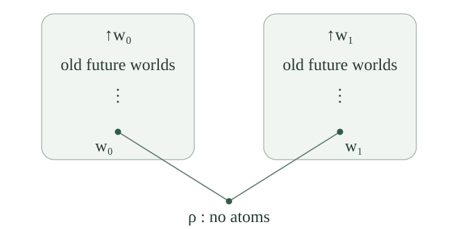
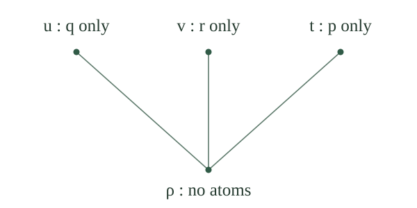

Work in the numbered-atom propositional language, with atoms \(p_0,p_1,\ldots\) and the native connectives \(\bot,\neg,\land,\lor,\to\). Write \(\Gamma\vdash A\) for intuitionistic natural deduction. A theorem is a formula with a deduction from the empty premise set; abbreviate \(\varnothing\vdash A\) by \(\vdash A\).
The disjunction property is the assertion that a theorem \(A\lor B\) has a theorem disjunct: \(\vdash A\) or \(\vdash B\). The alternative here concerns the existence of two possible deductions. It is stronger than obtaining another proof of the same disjunction. We will prove it by putting two hypothetical countermodels above a common new world.
If \(\Gamma\nvdash A\), there are a Kripke model \(M\) and a least world \(w\) such that \(w\) forces every member of \(\Gamma\) and does not force \(A\).
Canonical completeness supplies a pointed countermodel. Restrict it to the upward cone of that point. The original point is least in the restricted frame, and generated-submodel truth preservation keeps every premise and the failed conclusion unchanged. This works for arbitrary premise sets in the fixed countable language.
Let \(M_0,M_1\) be Kripke models with respective least worlds \(w_0,w_1\). Their root gluing \(G(M_0,M_1)\) has a new world \(\rho\) and disjoint tagged copies \(\iota_0(W_0),\iota_1(W_1)\) of their entire world sets. Its order is specified by
There are no comparisons between the two old branches, and no old world lies below \(\rho\). Give \(\rho\) the empty atom valuation and retain the original valuations on each tagged branch.
This is a nonempty preordered model. Reflexivity holds at the new root and inside each branch. A composable pair beginning in a branch stays in that branch, so transitivity is inherited there; a pair beginning at \(\rho\) satisfies transitivity because \(\rho\) lies below every world. Atom persistence from \(\rho\) is vacuous, and every other comparison uses persistence in its old model.

For every formula \(D\), branch \(i\in\{0,1\}\), and old world \(u\in W_i\),
Induct on \(D\), with the equivalence asserted at every world of each branch. Atom valuations were retained, and falsum is forced nowhere. Conjunction and disjunction follow from their local forcing clauses and the induction hypotheses.
The future worlds of \(\iota_i(u)\) are exactly the worlds \(\iota_i(v)\) with \(u\leq_i v\). The new root is below this world, and the other branch is incomparable with it, so neither adds a future world. Consequently the universal condition for forcing an implication is exactly its old universal condition after applying the two component induction hypotheses. The same future-world correspondence, with the induction hypothesis for its argument, proves the case of primitive negation. This checks all constructors of the shared syntax.
For every formula \(C\), root gluing satisfies
For the forward direction, persistence carries the forced negation to both old least worlds, and transfers it back to each original model.
Conversely, suppose both old least worlds force \(\neg C\). Every old world extends its branch's least world, so no old world forces \(C\). This remains true after gluing by the preservation theorem. The new root cannot force \(C\) either: if it did, persistence to \(\iota_0(w_0)\) would make that old root force \(C\), contrary to its negation. Thus every future world of \(\rho\), including \(\rho\) itself, fails to force \(C\). This is exactly the clause for \(\rho\Vdash\neg C\).
For all formulas \(A,B\) in the numbered-atom language,
Suppose neither disjunct is a theorem. By , choose rooted models \(M_0,w_0\) and \(M_1,w_1\) failing \(A\) and \(B\), respectively. Glue them below a new root \(\rho\). If \(\rho\) forced \(A\), persistence and old-world preservation would make \(w_0\) force \(A\), a contradiction. The same argument using the other branch shows that \(\rho\) does not force \(B\).
The local disjunction clause therefore makes \(A\lor B\) fail at \(\rho\). Soundness rules out an assumption-free deduction of that disjunction. This proves the contrapositive of the assertion. The reverse implication also holds: a theorem disjunct gives the theorem disjunction by its introduction rule.
If \(\Gamma\vdash A\lor B\), must \(\Gamma\vdash A\) or \(\Gamma\vdash B\)?
No. Take \(\Gamma=\{p_0\lor p_1\}\). Its sole premise gives a deduction of the disjunction. A Boolean valuation making \(p_0\) false and \(p_1\) true satisfies \(\Gamma\) and refutes \(p_0\), so Boolean soundness excludes \(\Gamma\vdash p_0\). Interchanging the two truth values excludes \(\Gamma\vdash p_1\).
The gluing proof of the theorem property used no assumptions at its new root. Arbitrary assumptions satisfied separately at old roots need not hold there: in this example a new root can force neither atom and therefore fail to force their disjunction.
A single-premise rule \(P/Q\) is a pair of formulas, written with premise \(P\) above conclusion \(Q\). It is derivable when \(\{P\}\vdash Q\), equivalently when \(\vdash P\to Q\) by the deduction theorem.
The rule is admissible when every simultaneous formula substitution \(\sigma\) has the following property:
Here \(\sigma\) assigns an arbitrary formula in the same numbered-atom language to each atom, and acts by the specified substitution operation. The premise of this implication is a closed theorem, not an available open assumption. This quantification over all substitutions is part of admissibility.
For every single-premise rule \(P/Q\), derivability implies admissibility.
Suppose \(\{P\}\vdash Q\), and take any substitution \(\sigma\) for which \(\vdash P[\sigma]\). Substitution of the given derivation gives \(\{P[\sigma]\}\vdash Q[\sigma]\). Replace its allowed premise by the closed proof of \(P[\sigma]\). The result is a closed proof of \(Q[\sigma]\), as required.
For every \(C,A,B\),
If both deductions of individual disjuncts failed, rooted countermodels would give \(M_0,w_0\) forcing \(\neg C\) but not \(A\), and \(M_1,w_1\) forcing \(\neg C\) but not \(B\). Glue them. The common-negation lemma makes the new root force \(\neg C\), while persistence and old-world preservation make it force neither disjunct, just as in the theorem case. Thus it refutes the stated consequence from \(\{\neg C\}\), contradicting soundness. This proves the alternative, even when the single negated premise is inconsistent.
The Harrop independence-of-premise rule considered here is
For every \(C,A,B\), if its displayed premise is a theorem, then at least one of \(\neg C\to A\) and \(\neg C\to B\) is a theorem. Consequently its conclusion is a theorem, and the displayed rule is admissible under every formula substitution.
From a closed proof of \(\neg C\to(A\lor B)\), the deduction theorem gives \(\{\neg C\}\vdash A\lor B\). Apply . In either resulting case discharge \(\neg C\) to prove the corresponding implication, and then introduce that disjunct into the displayed conclusion.
To check admissibility, take any substitution \(\sigma\). It commutes with the native connectives, so the substituted premise is exactly \(\neg C[\sigma]\to(A[\sigma]\lor B[\sigma])\), and the substituted conclusion has the same displayed form with those three substituted formulas. The argument just given applies to these arbitrary instances. This verifies the full substitution requirement, not only the original atom instance.
Put \(p=p_0\), \(q=p_1\), and \(r=p_2\). The three-leaf model has four worlds: a root \(\rho\) and three incomparable terminal worlds \(u,v,t\), each above \(\rho\). The root verifies no atom; \(u\) verifies only \(q\), \(v\) only \(r\), and \(t\) only \(p\). Every unnamed atom is false everywhere. Reflexivity and these root-to-leaf comparisons define the order; the valuation is persistent because the root verifies nothing and the leaves have no proper extensions.

For \(C=p\), \(A=q\), \(B=r\), write
The three-leaf model forces \(P\) at \(\rho\) and fails to force \(Q\) there. Thus \(\{P\}\nvdash Q\), and \(\nvdash P\to Q\), although the rule \(P/Q\) is admissible.
The root does not force \(\neg p\), since \(t\) forces \(p\). At the terminal worlds \(u,v\), the atom \(p\) is absent forever, so both force \(\neg p\). The world \(t\) does not force \(\neg p\). These exhaust the future worlds of the root. Whenever one of them forces \(\neg p\), it is therefore \(u\) or \(v\), where \(q\lor r\) holds. Hence \(\rho\Vdash P\).
However \(v\Vdash\neg p\) and \(v\nVdash q\), so \(\rho\nVdash\neg p\to q\). Similarly \(u\) refutes \(\neg p\to r\). The root consequently fails to force their disjunction \(Q\). Soundness excludes the deduction from \(P\), and the deduction theorem excludes the closed implication. Admissibility was proved for all formula instances in . The model does not contradict that result: \(P\) holds at this world, but the admissibility assertion only applies when a substituted premise has a closed proof.
May a deduction from an arbitrary premise set \(\Gamma\) use the displayed Harrop rule whenever its premise has been deduced from that same \(\Gamma\)?
No. With \(\Gamma=\{P\}\) from , the assumption rule already deduces \(P\), but there is no deduction of \(Q\) from that context. Allowing this local use and then discharging \(P\) would produce the closed formula \(P\to Q\), which the same countermodel refutes.
Thus this rule preserves theorems under substitution, while its unrestricted use under open assumptions would strengthen the calculus. The distinction is precisely the difference between admissibility and derivability defined above.
For arbitrary \(D,A,B\), does \(\vdash D\to(A\lor B)\) imply \(\vdash(D\to A)\lor(D\to B)\)?
No. Put \(D=q\lor r\), \(A=q\), and \(B=r\). The premise \((q\lor r)\to(q\lor r)\) has the closed identity proof. In the three-leaf model, \(v\) forces \(q\lor r\) but not \(q\), so the root fails to force \((q\lor r)\to q\). The world \(u\) similarly refutes \((q\lor r)\to r\). Their disjunction therefore fails at the root, and has no closed proof by soundness.
The common-negation lemma supplied the extra condition in the Harrop argument. An arbitrary common antecedent does not have its root-preservation property, as the ordinary-assumption example already shows.